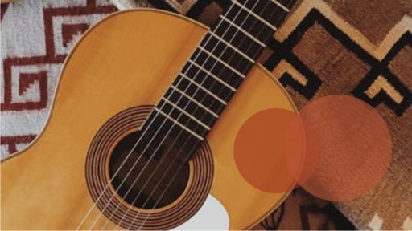

K-Pop Groups
My favorite K-pop Groups:
Seventeen is a thirteen-member boy group that debuted in 2015 under Pledis Entertainment. The fanbase name of seventeen is "Carats" Seventeen is one of my favorite K-pop groups. My favorite songs from Seventeen are: Hit, Hot, Very Nice, and Pretty U. Seventeen has a variety of music. Some songs like Pretty U are happy songs that want to provide you with happy energy. Songs like Hit have amazing choreography, the song is full of power and makes you want to dance. Seventeen also has YouTube videos known as Going Seventeen. I enjoy watching Going Seventeen because it has a lot of different concepts, you can spend a lot of time watching the Going Seventeen videos and you will not be bored.
Twice is a nine-member girl group that debuted in 2015 under JYP Entertainment. They are known for their infectious pop music, cute and colorful concepts, and fun music videos. The name "Twice" was chosen to reflect the group's desire to capture fans' hearts through their music and performances and their formation process through the survival show "Sixteen" My favorite Twice songs are: Cheer Up, Cry for me, and Alcohol-Free. I like Alcohol free because the song makes me relax. I enjoy Cry for me because of the music vibes and the choreography. Cheer up is a song that will make you happy when you hear it.